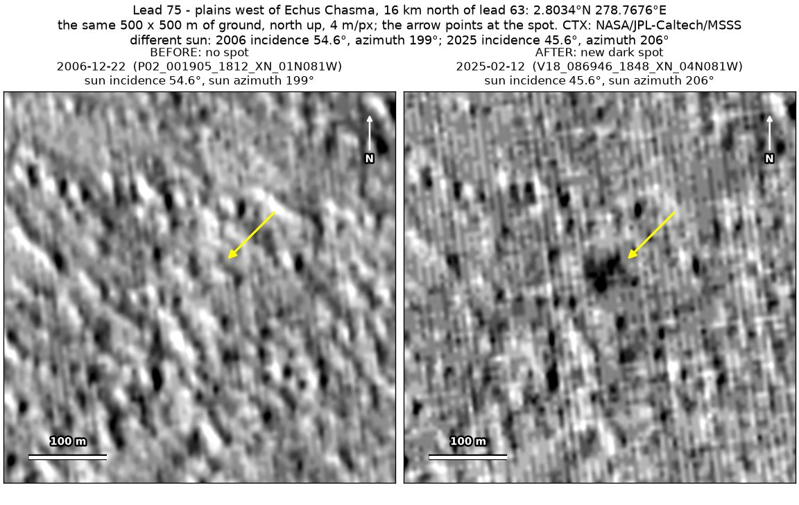
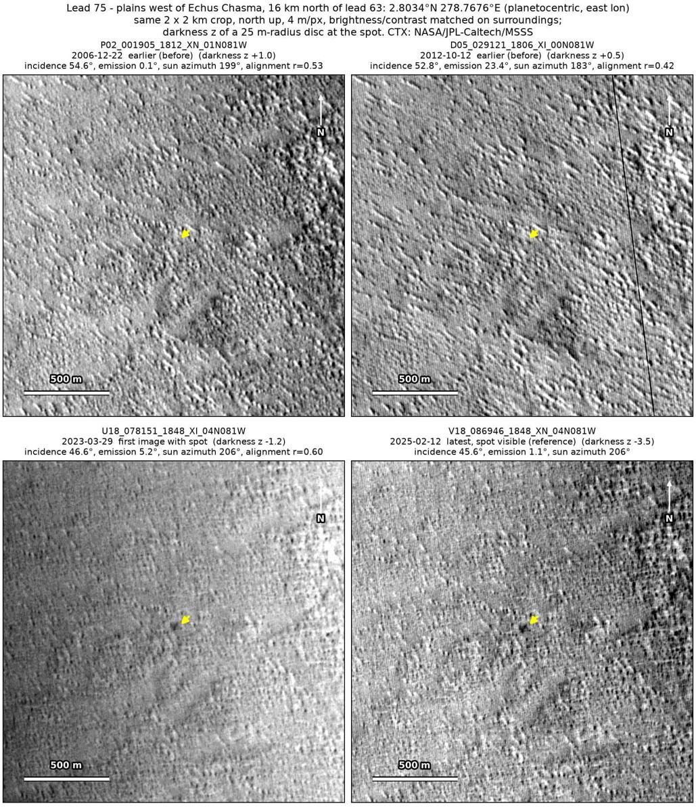
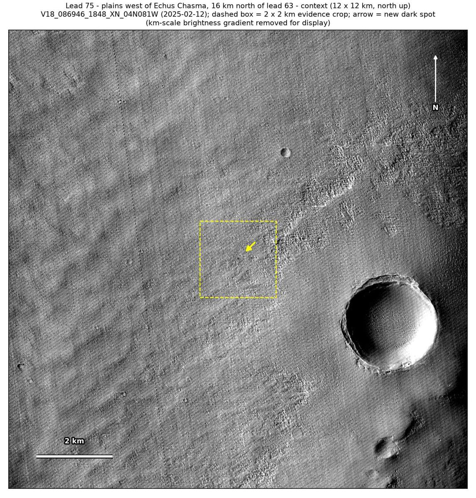

Professor of Mathematics
Paata Ivanisvili
Department of Mathematics, University of California, Irvine
← Possible new impact sites on Mars
Candidate 75: Plains west of Echus Chasma, 16 km north of candidate 63
Promising · roughly 50%

What changed. A compact dark spot about 45 m across, with a lobe to the north-west, appeared on wind-textured plains west of Echus Chasma, between October 2012 and March 2023, in two CTX images from two orbits.
Why it may be a new impact. Two earlier images, from December 2006 and October 2012, show no spot there, under a lower sun than the March 2023 and February 2025 images, which would have lengthened any shadow. Allowing for a gradual change in brightness across the area, the spot is the darkest point within 200 m in both later images, and the aligned before-and-after difference changes more at the spot than anywhere else in the 2 km area, so it could be the blast zone of a small new crater.
- Location
- 2.803° N, 278.768° E (81.232° W)
- Absent
- 22 December 2006 and 12 October 2012
- Present
- 29 March 2023 and 12 February 2025
- Size
- Compact dark spot about 45 m across (48 × 50 m in the February 2025 image)
- Confidence
- Promising candidate: roughly 50% likely to be a new impact.
- Nearby
- Candidate 63, 16.5 km to the south, was found in the same pair of images and formed in an overlapping window, but at that distance this spot is unlikely to be a fragment of the same event.
- Caveat
- The spot is faint, and the hazy March 2023 image shows only a smudge, so the case rests mostly on the blocky, compressed February 2025 image. On these wind-textured plains, dust stripped by wind from a small patch, for example in the lee of a knob, can make a faint change like this. The dark feature nearby used as a check is only weakly to moderately dark in the earlier images. No image from the high-resolution HiRISE camera covers it; the nearest ends 12.5 km away. Like every candidate here, it is unconfirmed: see the caveat.

